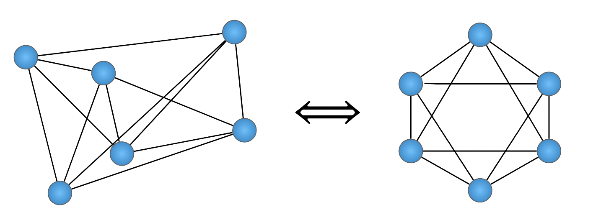
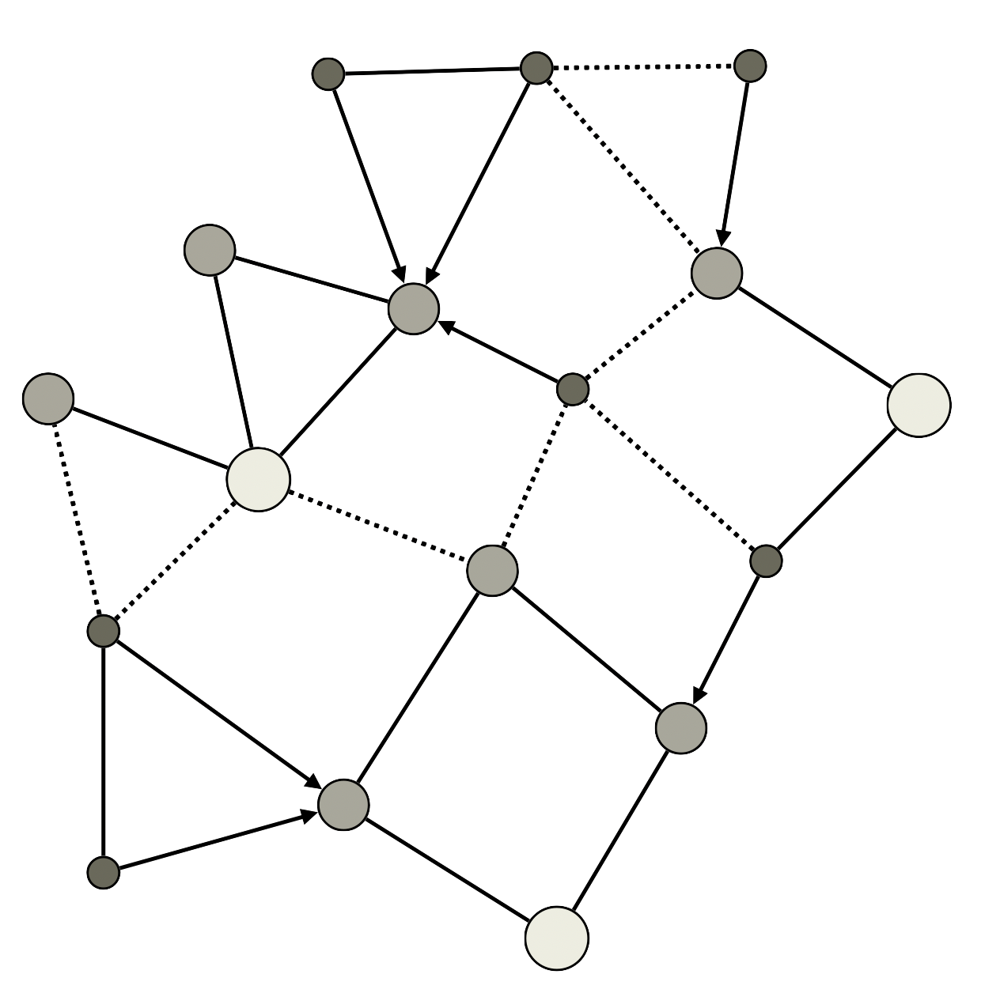
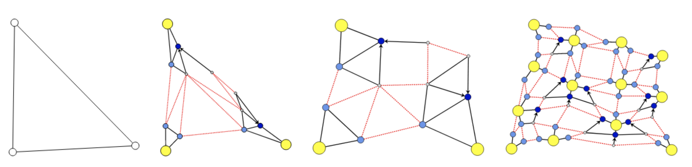
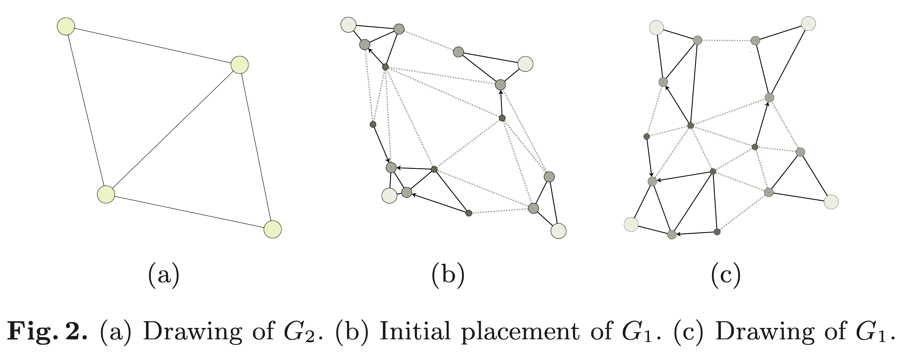

Force-directed layouts
Force directed (FD) layouts are motivated by the need for:
The force directed philosophy:
In terms of bounds, guarantees, etc. FD offers no advantages.
That said, in practice, the heuristic work quite well!
The first attempt at force-directed layout was the through the use of spring embedders
The basic idea is as follows. To embed [lay out] a graph we replace the vertices by steel rings and replace each edge with a spring to form a mechanical system... The vertices are placed in some initial layout and let go so that the spring forces on the rings move the system to a minimal energy state.
Foundational thought: to layout a graph G=(V,E)G = (V, E)G=(V,E), treat is as a physical system, i.e. subject it to certain forces and let it reach a "steady state"
(1) Connected vertices should be close (2) ... but no vertices should be too close
At a distance of about 1 fm [femto-meter] the strong nuclear force is attractive and about 10 times the electric force between two protons. The force decreases rapidly with increasing distance... when two nucleons are within about 0-4 fm of each other, the strong nuclear forces become repulsive.

What are we trying to achieve? Let n=Vn = \lvert V\rvertn=V and dij=vivjd_{ij} = \lVert v_i - v_j \rVertdij=vivj. Want an optimal layout PP^\astP satisfying:
argminPRn2i<jcij(dijkij)2\argmin_{P \subset \mathbb{R}^{n \times 2}} \sum\limits_{i < j}c_{ij}(d_{ij} - k_{ij})^2 PRn2argmini<jcij(dijkij)2
where kijk_{ij}kij is the "ideal distance" between viv_ivi and vjv_jvj and cijc_{ij}cij is a scaling constant
Optimal distance between vertices ought to be:
k=CA/Vk = C \sqrt{A / \lvert V \rvert } k=CA/V
where: k\quad k \approxk radius of empty area around a vertex A\quad AA = area of screen C\quad CC = constant scaling factor
How can we optimize the layout such that every vertex is at distance kkk from each other?
Objective:argminPRn2i<jcij(dijkij)2\text{Objective: }\quad \argmin_{P \subset \mathbb{R}^{n \times 2}} \sum\limits_{i < j} c_{ij}(d_{ij} - k_{ij})^2 Objective:PRn2argmini<jcij(dijkij)2
Fruchterman's idea: (1) Connected vertices should be close (attraction) (2) ... but no vertices should be too close (repulsion)
We can encapsulate these heuristics as functions:
fa(d)=d2/kf_a(d) = d^2 / k fa(d)=d2/k
fr(d)=k2/df_r(d) = - k^2 / d fr(d)=k2/d
Objectivei<jfa(dij)+fr(dij)\text{Objective} \approx \sum\limits_{i < j} f_a(d_{ij}) + f_r(d_{ij}) Objectivei<jfa(dij)+fr(dij)
procedure Layout(G = (V, E)) for i = 1 to n do for each v in V do disp(v) = 0 for each u in V do if u v then = pos(v) - pos(u) disp(v) = disp(v) + /|| f_rep(u, v) for each (u, v) in E do = pos(v) - pos(u) disp(v) = disp(v) - /|| f_attr(u, v) disp(u) = disp(u) + /|| f_attr(u, v) for each v in V do pos(v) = pos(v) + disp(v)/|disp(v)| |disp(v)|
Does anyone see anything wrong with this?
procedure Layout(G = (V, E)) initialize temperature t for i = 1 to n do for each v in V do disp(v) = 0 for each u in V do if u v then = pos(v) - pos(u) disp(v) = disp(v) + /|| f_rep(u, v) for each (u, v) in E do = pos(v) - pos(u) disp(v) = disp(v) - /|| f_attr(u, v) disp(u) = disp(u) + /|| f_attr(u, v) for each v in V do pos(v) = pos(v) + disp(v)/|disp(v)| min(|disp(v)|, t) t = cool(t)
Reminder to stop and show iterations of FR
Opinion: It's not immediately clear how to fix Problem #3
Suppose we interpret GGG as a galaxy (set of solar systems)
Recall: a partition of a set X\mathcal{X}X is a set of non-empty subsets {X1,,Xk}\{X_1, \dots, X_k\}{X1,,Xk} such that:
X=i=1kXk,XiXjXiXj=\mathcal{X} = \bigcup_{i = 1}^k X_k, \quad X_i \neq X_j \implies X_i \cap X_j = \emptyset X=i=1kXk,Xi=XjXiXj=
Partition VVV such that each vVv \in VvV is a sun, a planet, or a moon
Let's make this a bit more exact...
Partition G=(V,E)G = (V, E)G=(V,E) into solar systems S\mathcal{S}S:
S={S0,S1,,Sk}\mathcal{S} = \{S^{0}, S^{1}, \dots, S^{k}\} S={S0,S1,,Sk}
such that:
If G=(V,E)G = (V, E)G=(V,E) is partitioned by S\mathcal{S}S with S=k\lvert \mathcal{S}\rvert = kS=k, then:
Greedy algorithm:
Optional: Choose sun nodes in order a,b,ca, b, ca,b,c

Suppose each solar system SiS^iSi is collapsed to a vertex positioned its corresponding barycenter
Similarly: collapse inter-system edges weighted with some heuristic (e.g. average edge weights)
Observe this takes O(V+E)O(\lvert V\rvert + \lvert E \rvert)O(V+E) time
Inductively: Let G=G0G = G_0G=G0, Gi=G_i =Gi= coarsened graph of Gi1G_{i-1}Gi1, such that we have a multilevel representation of GGG:
G0G1GkG_0 \hookleftarrow G_{1} \hookleftarrow \dots \hookleftarrow G_k G0G1Gk
such that XYX \hookleftarrow YXY indicates that YYY is a coarsening of XXX

Picture from (1) showing 3 coarsenings
End Detour: Why did we just do all of that?
Recall we want to accelerate:
i<jfa(dij)+fr(dij)\sum\limits_{i < j} f_a(d_{ij}) + f_r(d_{ij}) i<jfa(dij)+fr(dij)
The multi-layer representation motivates the following:

Complexity of multi-layer layout:
Tmulti=i=0k(Tpartition(Gi)+Tcoarsen(Gi)+Tforce(Gi))T_{\text{multi}} = \sum\limits_{i=0}^k \left( T_{\text{partition}}(G_i) + T_{\text{coarsen}}(G_i) + T_{\text{force}}(G_i) \right) Tmulti=i=0k(Tpartition(Gi)+Tcoarsen(Gi)+Tforce(Gi))
Note we've shown: 1. i=0kTpartition(Gi)O(V+E)\sum\limits_{i=0}^k T_{\text{partition}}(G_i) \sim O(\lvert V \rvert + \lvert E \rvert)i=0kTpartition(Gi)O(V+E) 2. i=0kTcoarsening(Gi)O(V+E)\sum\limits_{i=0}^k T_{\text{coarsening}}(G_i) \sim O(\lvert V \rvert + \lvert E \rvert)i=0kTcoarsening(Gi)O(V+E)
TmultiTforce\implies T_{\text{multi}} \cong T_{\text{force}} TmultiTforce
Assume Ei+112Ei\lvert E_{i+1} \rvert \leq \frac{1}{2} \lvert E_{i} \rvertEi+121Ei for all i{0,1,,k}i \in \{0, 1, \dots, k\}i{0,1,,k}. Then:
i=0kTforce(Gi)=i=0kT(Vi,Ei)\quad \sum\limits_{i=0}^k T_{\text{force}}(G_i) = \sum\limits_{i=0}^k T(\lvert V_{i} \rvert, \lvert E_{i} \rvert)i=0kTforce(Gi)=i=0kT(Vi,Ei)
i=0kTforce(V2i,E2i)\quad \leq \sum\limits_{i=0}^k T_{\text{force}}(\frac{\lvert V \rvert}{2^i}, \frac{\lvert E \rvert}{2^i}) \quadi=0kTforce(2iV,2iE) (because 12ViVi1\frac{1}{2} \rvert V_i \rvert \leq \lvert V_{i-1} \rvert21ViVi1)
Tforce(V,E)i=0k12i\quad \leq T_{\text{force}}(\lvert V \rvert, \lvert E \rvert) \sum\limits_{i=0}^k \frac{1}{2^i} \quadTforce(V,E)i=0k2i1 (for large V\lvert V \rvertV and E\lvert E \rvertE)
2Tforce(V,E)\quad \leq 2 \, T_{\text{force}}(\lvert V \rvert, \lvert E \rvert) \quad2Tforce(V,E) (by geometric series)
Tmulti(V+E)\quad \implies T_{\text{multi}} \sim \Omega(\lvert V \rvert + \lvert E \rvert)Tmulti(V+E)
O(V+E)O(\lvert V \rvert + \lvert E \rvert)O(V+E) is much better than O(V2)O(\lvert V \rvert^2)O(V2) if GGG is sparse
Can be improved to O(VlogV)O(\lvert V \rvert \log \lvert V \rvert)O(VlogV) (!) if the fast multipole method (FMM) is employed
Listed by SIAM editors in top 10 algorithms of previous century[1]
FMM Perspective: - solar system decomposition is just one type of decomposition - there are plenty of others (e.g. quadtrees)!
Quad tree \Leftrightarrow hierarchical decomposition of points in R2\mathbb{R}^2R2 where each node has fixed degree 4.
Reminder to stop and show FMM benchmark
Thank you
Global style
<div data-marpit-fragment>
</div>
_blockquote { font-size: 0.55em; }
# How to do in practice? <div style="margin-top=60px;"> In practice, one would implement the algorithm using the *Fast Multipole Method* (FMM) with the levels determined by e.g. a *refined quad tree*. > For space restrictions, we can neither describe every basic component of this algorithm in detail, nor compare our method with the existing ones in a satisfactory way... We have developed a new O(N log N ) method that is omitted here for brevity, since it quite technical. Programming can be kind of hard... ...be nice to open source developers! Authors give implementation in full version of paper[1].